LIBRO TRES
El Kosaris
El libro de Anthea

LIBRO TRES
El libro de Anthea
Este es el tercer libro del Kosaris y no lo he comenzado yo.
Comienza con catorce páginas que escribí cuando tenía veinte años, sobre mi abuela Demira y sobre el anciano que acudía a la panadería los jueves. Las guardé en un cajón y no las toqué durante cincuenta y dos años. Cuando las encontré, me parecieron demasiado categóricas. No cambié nada. Añadí una frase debajo y la fecha.
El primer libro trata de las cuatro columnas. El segundo trata de la distinción entre lo establecido y lo supuesto. Este libro trata de la pregunta que subyace a todo ello: ¿cómo se cría a una persona para que pueda soportarlo?
Una persona no es un ser simple. Es una superposición de capas, en el orden en que se han formado, y cada capa solo puede surgir cuando la capa inferior se ha solidificado. Este libro sigue ese orden y no omite nada.
Siete días. Eso es lo que tarda el huevo en saber que sigue adelante. Durante esos días no entra nada. Solo se forma una estructura.
Siete meses. El reptil. El niño vive en dos dimensiones. No es una metáfora: los peces y los lagartos tienen los ojos a los lados y ven alrededor, pero sus dos ojos no trabajan juntos y no hay profundidad. Plano y todo a la vez. Durante esos meses, el niño aprende a gobernar por sí mismo sus funciones vitales: respirar, conservar el calor, evitar el peligro. Ningún vínculo, ninguna empatía, ningún reconocimiento de sí mismo —pero intacto y fiable en su propio nivel. Al cabo de siete meses, esa capa está completa y, sin embargo, un niño suele nacer alrededor del noveno mes. Durante esos dos meses no se añade nada nuevo. La capa se consolida. Una capa no está terminada cuando funciona; está terminada cuando resiste.
Siete años. El mamífero. Los ojos pasan a estar orientados hacia delante, las dos imágenes empiezan a trabajar juntas y de ahí surge la profundidad —la tercera dimensión. Y con la profundidad llega el sentimiento. No se solidifica como norma ni como conocimiento, sino como una obviedad vivida, y solo se solidifica cuando hay una única persona presente que permanece allí durante años. Lo que no se solidifica aquí, ya no se solidifica en ninguna parte más adelante.
Lo que todavía no corresponde a esos siete años es el tiempo. Un mamífero tiene reflejos temporales —un ritmo que vuelve, hambre a una hora fija, un perro que está junto a la puerta a la hora prevista—, pero no puede planificar. No puede saber que mañana será distinto. Por eso esos siete años deben transcurrir sin conciencia del tiempo: sin reloj, sin calendario, sin un después, sin un objetivo a cinco años vista. Lo que debe construirse durante esos años es una base refleja sin tiempo, y solo aparece si mantenemos el tiempo fuera de ella.
Después viene la persona. Solo ahora se añade la cuarta dimensión: el tiempo. El niño puede pensar por adelantado en un día que aún no existe y hacer ya algo para él. Desde ese momento puede entrar todo lo que hemos mantenido fuera durante siete años, y entra fácilmente, porque ya hay algo sobre lo que depositarlo. El sentimiento y el entendimiento avanzan entonces uno junto al otro, hasta los catorce y hasta los veintiún años. A los catorce se abre la capacidad de observar el propio pensamiento. A los veintiuno, el entendimiento puede asumir el mando —pero solo en la medida en que haya debajo una base afectiva suficiente para sostenerlo.
Pero una persona tiene más de cuatro direcciones. Son siete: las tres del espacio, el tiempo y, además, el tamaño, el valor y el número. El tamaño es saber cuán grande es algo y no solo poder calcularlo. El valor es lo que vale algo, con independencia de que alguien lo mida. El número es poder sentir que un caso aislado todavía no es nada y que mil casos sí son algo.
Esas tres últimas no se construyen en nuestra educación. Se eliminan. La escuela lo reduce todo a una sola medida, llama valor a lo que cabe en el boletín de notas y enseña a calcular con números sin darles jamás un sentimiento. El niño sale de ella con cuatro direcciones y piensa que eso es todo.
Esta última condición es la razón de que exista este libro. Un entendimiento sin una base afectiva debajo no toma el mando. Se mueve al compás de quien le habló en último lugar.
Hoy en día, la segunda línea aparece mucho más tarde en la vida, y en muchos no aparece. No es porque se aprenda menos. Es porque se han llenado de aprendizaje los años en que una persona debería equivocarse, y porque falta la base afectiva sobre la que esos errores podrían asentarse. Quien ha cometido demasiado pocos errores no tiene nada sobre lo que juzgar.
Setenta y siete. Esa no es una edad en la que una persona aprenda algo. Es el tiempo que transcurre antes de que lo que una persona ha aprendido reaparezca en alguien que no la conoció.
He sido enfermera durante cuarenta y seis años. He visto nacer a ciento diecinueve niños y no he criado a ninguno. Es una carencia de este libro, y prefiero decirlo de antemano a que alguien lo descubra después.
Cuando no sé algo, queda dicho.
Parte 1

En la que se cuenta lo que Anthea escribió a los veinte años sobre su abuela y sobre el anciano, y lo que añadió al pie cincuenta y dos años después.

Yo veía colores alrededor de las personas. Durante mucho tiempo no se lo conté a nadie, porque a mi madre la inquietaba y a mi abuela no, y era más fácil estar con mi abuela.
No sé qué era. Más tarde estudié el fenómeno y nunca encontré un nombre que le correspondiera. Los médicos tienen nombres para ello, pero esos nombres no lo abarcan.
Lo que sí sé es cuándo desapareció. Desapareció cuando yo tenía catorce años, en el invierno en que murió mi abuelo, y nunca regresó.
Estuve de duelo por ello durante treinta años.
Ahora soy vieja y lo veo de otra manera. Ya no creo haber perdido algo. Creo que algo se superpuso.
Se añadió algo que observaba lo que yo veía y preguntaba si era realmente cierto.
Esa cosa nunca volvió a marcharse. Sigue aquí, y en este momento está mirando esta frase y preguntando si de verdad sé esto.
No estoy segura.
Pero en cincuenta años he visto que les sucedía lo mismo a quince niños, aproximadamente a la misma edad, y eso no es una prueba, pero tampoco es nada.
Anthea escribe:Se añade algo que observa. Ese no es el final del niño. Es la segunda capa que se abre.

Mi abuela pesaba cada saco de harina. La vi hacerlo cinco mil veces y nunca lo observé como se observa algo extraordinario, porque así son las cosas cuando eres pequeña.
Creía que pesar formaba parte de hacer pan.
Nunca me explicó por qué lo hacía. Nunca me dijo que fuera importante ni que tuviera que recordarlo.
Ella pesaba y yo permanecía a su lado.
Cuando tenía diecisiete años y empecé a trabajar en la clínica, el primer día conté los frascos del armario, y la enfermera me preguntó por qué lo hacía, y yo dije que no lo sabía.
No lo sabía.
Mucho después comprendí que lo había aprendido en la panadería.
Lo que aprendí de aquello es lo más desagradable de todo este libro: lo más importante que me enseñó mi abuela, nunca me lo enseñó.
Lo hizo delante de mí.
Todo lo que sí me explicó, con palabras y con la intención de que lo recordara, lo he olvidado.
Anthea escribe:Un niño no adopta lo que usted dice. Adopta lo que usted hace mientras dice otra cosa.

El anciano venía a la panadería los jueves y yo solía estar allí, porque me gustaba.
Siempre preguntaba lo mismo y siempre lo preguntaba de otra manera.
Nunca preguntaba qué sabía. Preguntaba cómo lo sabía.
Cuando tenía ocho años, eso me molestaba, porque quería contar lo que sabía y era mucho.
Cuando tenía once años, empecé a pensarlo de antemano. Pensaba qué respondería si me lo preguntaba, y por eso empecé a mirar de otra manera lo que veía.
Eso era lo que hacía. Nunca me enseñó nada. Durante tres años me hizo la misma pregunta, hasta que empecé a formulármela yo antes de que entrara.
Y entonces dejó de hacerlo.
Más tarde, cuando tenía diecinueve años, le pregunté por ello. Le pregunté por qué había dejado de hacerlo.
Él dijo: "Porque ahora la tienes tú."
Entonces le dije que podría haberlo dicho. Nos habría ahorrado mucho tiempo.
Él dijo que eso no era cierto, y tenía razón, y tardé otros veinte años en comprender por qué.
Una pregunta que te hacen puedes responderla.
Una pregunta que te haces tú mismo ya no puedes dejarla a un lado.
Anthea escribe:No enseñes al niño la respuesta. Formula la pregunta tantas veces que el niño la haga suya.
Parte II
Parte 2

En la que no entra nada y solo se levanta la forma en la que más adelante podrá entrar algo.

Transcurren siete días antes de que un óvulo fecundado se implante.
Siete días durante los cuales está en camino y en los que, hasta donde podemos ver, no ocurre nada que merezca la pena nombrar.
No se añade nada. No se alimenta nada. No hay conexión con la madre y la madre no sabe nada.
Solo se crea una forma.
Nunca lo he visto con mis propios ojos y tampoco lo veré jamás. Lo sé por los libros, y lo aclaro porque en este libro casi todo lo demás es algo que yo misma he observado.
Aun así, lo anoto, y lo hago por esta razón.
En la clínica he visto cien veces cómo la gente se impacienta ante una fase en la que no ocurre nada. Quieren que entre algo. Quieren alimentar, hablar, enseñar, tocar.
Y la primera semana de una persona es una semana en la que no entra nada y en la que el único trabajo consiste en levantar la forma en la que más adelante podrá entrar algo.
Quien ya quiere dar algo durante esa semana se lo da a algo que todavía no existe.
Así es al principio y así es en cada fase posterior.
Anthea escribe:Para que la vida pueda comenzar, la forma tiene que existir. Esa semana no ocurre nada, y ese nada es el trabajo.

Había dos casas en la misma calle en las que se esperaba un niño ese mismo año.
En una de ellas se preparó todo. Llegó una cuna, llegaron provisiones y llegaron mantas, y todo quedó planchado en un armario.
En la otra casa también llegó todo aquello, y además ocurrió algo que nadie advirtió.
La mujer de esa casa empezó a comer a horas fijas. Se acostaba cuando oscurecía y se levantaba cuando amanecía, y ya lo hacía desde cuatro meses antes de que llegara el niño.
No lo hacía por el niño. Lo hacía porque dormía mal y porque alguien le había dicho que eso ayudaba.
Seguí a aquellos dos niños hasta que cumplieron dos años.
El segundo dormía. El primero no.
No sé si se debió a eso. Había otras diez diferencias entre aquellas dos casas y no medí ninguna de ellas.
Pero desde entonces les he dicho lo mismo a todas las mujeres que quisieron escucharme, y aquí también lo digo:
El ritmo de una casa debe existir antes de que llegue el niño.
Un reloj que solo empieza a hacer tic tac cuando hay algo que medir no es un reloj. Es una reacción.
Anthea escribe:Establece el ritmo antes de que llegue el niño. Un reloj que solo empieza a hacer tic tac cuando hay algo que medir no es un reloj.

En cada casa hay alguien que decide qué entra.
Por lo general no es nadie en particular y nunca se acuerda de antemano. Es la persona que dice: eso aquí no lo hacemos, o: déjalo entrar, o: ese hombre no entra.
He visto qué ocurre cuando no hay nadie que desempeñe ese papel.
Había una familia en la que todo el mundo era bienvenido y en la que entraba todo. Llegaban vecinos, llegaban historias, llegó una radio y más tarde empezó a aparecer de todo en una pantalla, y nunca hubo nadie que dijera que algo no debía entrar.
Eso era elogiado. Lo llamaban una casa abierta.
Los niños de aquella casa crecieron con todo.
Lo que no tuvieron fue a una sola persona que de vez en cuando detuviera algo.
No se trata de detener muchas cosas. En aquella casa casi nada era realmente perjudicial.
Se trata de que un niño viva la experiencia de que hay alguien de pie ante la puerta.
Quien nunca ha vivido eso tampoco construye una por sí mismo.
A los treinta años está abierto a todo lo que pasa por delante, lo llama amplitud de miras y nunca lo ha elegido.
Anthea escribe:Debe haber alguien ante la puerta antes de que algo llegue a ella. Un niño que nunca ha visto eso no construye una puerta.
Parte III
Parte 3

En la que se mira de forma plana y alrededor, y se establecen las funciones vitales — respirar, mantenerse caliente, evitar el peligro — y en la que se revela que una capa solo está terminada cuando logra resistir.

Mira un pez.
Tiene los ojos a los lados de la cabeza. Ve a la izquierda y ve a la derecha, y ve aproximadamente todo lo que lo rodea al mismo tiempo. Casi no hay lugar desde el que puedas acercarte sin que te vea.
Eso parece mejor que lo que tenemos nosotros, y en un aspecto lo es.
Pero lo ve en plano.
Sus dos ojos no trabajan juntos. Cada uno mira en su propia dirección y no hay nada en él que superponga las dos imágenes. Por eso no sabe a qué distancia está algo. Sabe que hay algo y dónde se encuentra aproximadamente, y nada más.
Un lagarto tiene lo mismo.
Eso es lo que en este libro llamo las dos dimensiones. No una idea, sino una manera de mirar. Alrededor, en plano, todo a la vez, sin profundidad.
Para lo que esos animales tienen que hacer, basta. Para huir no hace falta profundidad. Para huir solo hace falta saber que hay algo.
Un niño en el útero tampoco necesita esa profundidad, porque no hay nada lejano.
Todo lo que existe lo toca.
Anthea escribe:Las dos dimensiones no son una idea, sino una manera de mirar: alrededor, en plano, todo a la vez, sin profundidad. Para huir, basta.
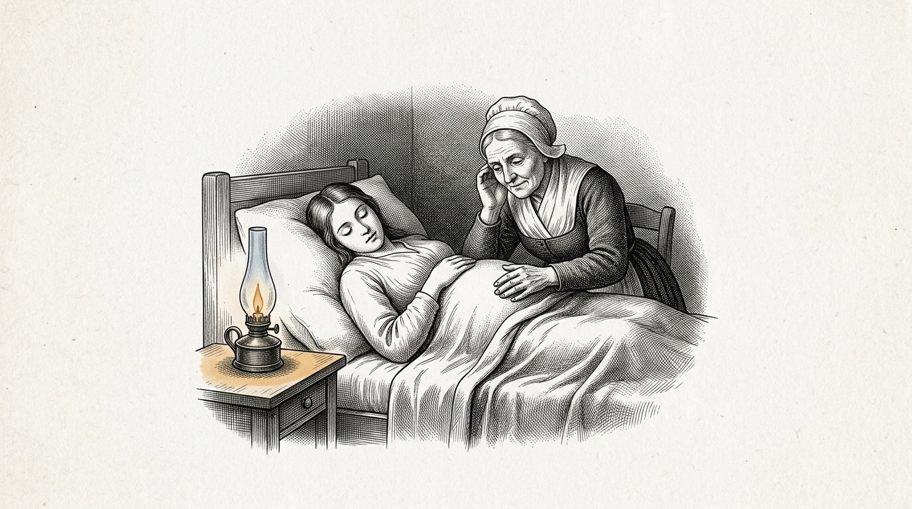
Un niño practica la respiración meses antes de que haya aire.
Hace el movimiento en el líquido en el que se encuentra. No aspira nada, porque no hay nada que aspirar. Solo hace el movimiento, miles de veces, sin que conduzca a nada.
Lo sentí con la mano en una mujer que estaba en el séptimo mes. Una serie de golpes breves, cuatro o cinco seguidos, y después silencio.
Ella pensó que era hipo, y lo era, más o menos, y al mismo tiempo era otra cosa.
Era un ser que ensayaba un acto para el que el mundo aún no existía.
Cuando el niño nazca, tendrá que respirar en cuestión de segundos. No habrá tiempo para aprender. No habrá un primer intento.
Todo lo que entonces deba suceder se habrá practicado durante siete meses en la oscuridad.
Un reptil vive en dos direcciones. Avanza y se desplaza de lado, y se mantiene sobre la superficie en la que yace. No trepa ni salta, y no comprende el arriba.
Así yace también un niño durante esos meses. Gira y se desliza, pero no hay arriba ni abajo, porque flota.
Por eso en este libro llamo al reptil la primera capa y no la más baja.
En el ser humano hay una parte que se pone en orden por sí sola, sin que haya nadie presente y sin que pueda aprender nada de otro.
Esa parte no necesita amor, ni palabras, ni aliento.
Necesita calma y tiempo, y es la única parte de una persona que está terminada antes de nacer.
Anthea escribe:La primera capa ensaya en la oscuridad un acto para el que el mundo aún no existe. Esa capa no necesita amor. Necesita calma.

Un niño en el útero siempre está igual de caliente.
No lo regula por sí mismo. Recibe el calor de la madre y no tiene que hacer nada para obtenerlo, y así sucede durante siete meses.
Y entonces nace, y en el plazo de una hora tiene que empezar a hacerlo por sí mismo.
Es la transición más difícil de una vida humana y dura aproximadamente un día.
He visto niños que podían hacerlo de inmediato y niños que no podían, y la diferencia no está en el amor que recibieron.
Por eso acostamos a un recién nacido contra su madre y no en una cuna. No por ternura. Porque un cuerpo mantiene caliente a otro mientras ese otro aprende a hacerlo por sí mismo.
Lo que aprendí de aquello no se aplica solo al calor.
Hay cosas que una persona recibe primero de otra y que después tiene que empezar a producir por sí misma.
Si tiene que producirlas demasiado pronto, algo sale mal. Si las recibe de otro durante demasiado tiempo, nunca aprende.
Con el calor, es cuestión de horas y podemos verlo.
Con todo lo que viene después, dura años y no lo vemos.
Anthea escribe:Lo que una persona recibe primero de otra, después tiene que producirlo por sí misma. Si es demasiado pronto, algo sale mal; si es demasiado tarde, nunca aprende.
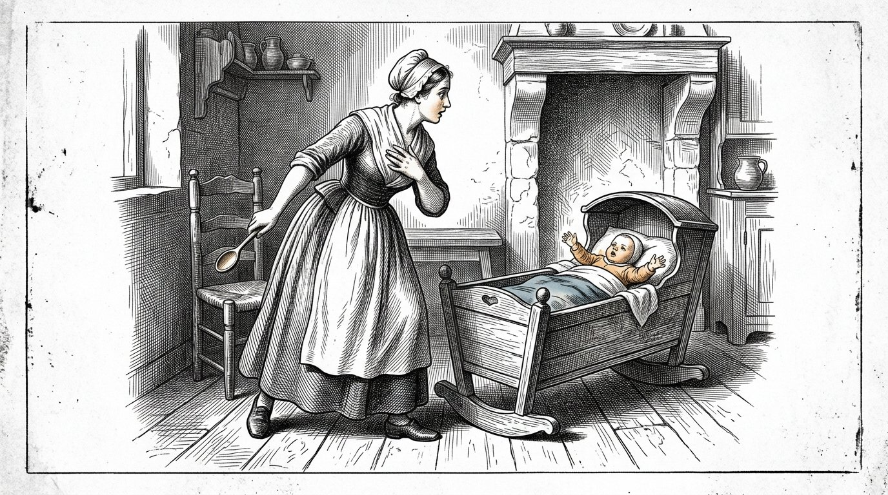
Se cerró de golpe una trampilla en la clínica y una mujer embarazada de muchos meses se sobresaltó.
Y el niño, bajo su mano, se sobresaltó con ella.
Ella lo sintió, me miró y dijo: "Él ha oído eso."
Entonces le dije que no lo había oído como oímos nosotros, y eso es lo que suele decirse, y ahora ya no sé si era cierto.
Lo que ocurrió en cualquier caso fue esto: llegó un estímulo intenso y le siguió una retirada, sin que hubiera nada entre ambos.
Ningún pensamiento. Ninguna ponderación. Ninguna pregunta sobre si era peligroso.
Esa es la tercera función vital y la más importante de las tres, porque respirar y mantenerse caliente conservan vivo a un ser, pero evitar el peligro lo mantiene entero.
En mi vida he conocido a tres personas cuya respuesta refleja no funcionaba bien.
No eran valientes. El valor es otra cosa: tener miedo y aun así avanzar. Ellos no tenían miedo.
Los tres murieron jóvenes, y de ninguno puedo decir que fuera por aquello.
Pero lo escribo porque hoy hacemos grandes esfuerzos para que los niños no se sobresalten.
El sobresalto no es un daño.
El sobresalto es la capa más antigua que existe, y estaba allí antes de que hubiera cualquier otra cosa.
Anthea escribe:Evitar el peligro no es miedo ni debilidad. Es la capa más antigua, y estaba allí antes de que hubiera cualquier otra cosa.

Después de siete meses, el reptil está terminado.
Todo lo que un cuerpo necesita para gobernarse a sí mismo ya está ahí. Respirar, conservar el calor, sobresaltarse. Un niño que nace en el séptimo mes puede seguir viviendo, y eso no es un milagro, sino el resultado normal de una capa terminada.
Y, sin embargo, un niño suele nacer dos meses después.
Durante mucho tiempo me lo pregunté, y no he llegado a una respuesta.
Lo que he visto es esto. En esos dos meses no se añade nada nuevo. No se establece ninguna función nueva. El niño gana peso, su piel se vuelve más gruesa y sus pulmones más amplios, y eso es casi todo.
La capa está terminada y se consolida.
En los niños que llegaron demasiado pronto vi cuál es la diferencia. Podían hacerlo todo. Podían hacerlo durante menos tiempo.
Así es como llegué a entenderlo, y añado de inmediato que son mis propias palabras, no las de un médico:
una capa no está terminada cuando funciona. Está terminada cuando resiste.
Quien cierra una fase en el momento en que ve que funciona, la cierra dos meses demasiado pronto.
Anthea escribe:Una capa no está terminada cuando funciona. Está terminada cuando resiste.
Parte IV
Parte 4
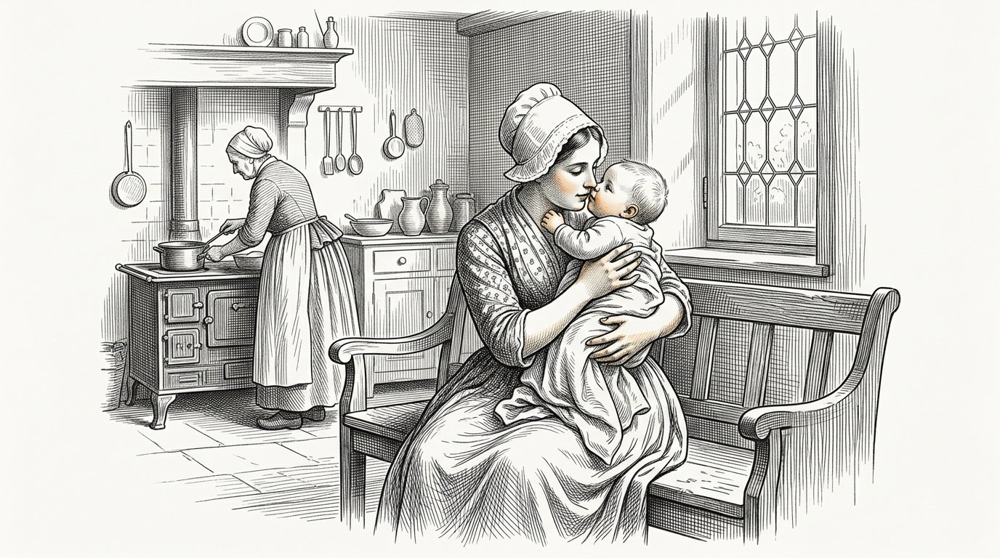
En la que se incorpora la tercera dirección y el sentimiento se solidifica, no como regla sino como naturalidad vivida — y en la que la cuarta dirección aún se mantiene alejada durante siete años.

Llega un día en que un niño se incorpora.
Estaba tumbado, se sentaba, se deslizaba por el suelo — y entonces agarra el borde de una silla y se levanta, y se sostiene de pie, y se cae.
Lo que aparece ese día es la tercera dirección.
Había comenzado antes, y había comenzado en los ojos.
Un mamífero tiene los ojos orientados hacia delante. Ve menos que el pez — hay todo un mundo detrás de él que no ve y para el que tiene que darse la vuelta.
A cambio, sus dos ojos ven lo mismo desde dos lugares, y hay algo en él que superpone esas dos imágenes.
De ahí nace la profundidad.
Desde ese instante no solo existe algo, sino también la distancia a la que se encuentra. Se puede agarrar. Está demasiado lejos. Está casi al alcance.
Un recién nacido aún no posee eso. Tardan meses sus ojos en aprender a trabajar juntos, y sucede de manera natural y nadie ve cómo ocurre.
Mientras un niño está en el suelo, vive como vivía el reptil: hacia delante y hacia los lados. No hay un arriba al que pueda llegar por sí mismo.
Desde que se pone de pie, existe la altura. Hay algo demasiado lejos para cogerlo. Hay una mesa sobre la que descansa algo. Existe la caída.
Y con ello aparece algo distinto que comienza en el mismo instante y que nadie relaciona con la tercera dirección.
El niño mira hacia atrás.
Se incorpora, se pone de pie y entonces gira la cabeza para ver si alguien lo ha visto.
Lo he observado en muchísimos niños, y siempre ocurre en la misma semana en que empiezan a sostenerse de pie.
El mamífero no se separa del espacio. Llega con el espacio.
Quien tiene altura puede caer. Quien puede caer necesita que alguien lo mire.
Anthea escribe:Con la tercera dirección llega el mamífero. Quien tiene altura puede caer, y quien puede caer mira hacia atrás para ver si alguien lo está mirando.

He visto nacer a ciento diecinueve niños en cuarenta y seis años.
Un recién nacido hace cuatro cosas durante la primera semana. Respira, bebe, duerme y grita.
Eso es todo. Parece poco, y es casi todo lo que queda fijado en una vida humana.
Porque lo que sucede durante esa semana no es que el niño aprenda algo. Es que el cuerpo determina en qué clase de mundo ha venido a parar.
¿Vendrá alguien cuando grite, o no?
No es más que eso. Es una sola pregunta, y la respuesta no llega en palabras, sino en la rapidez con que aparece alguien.
He visto niños para los que siempre acudía alguien, niños para los que casi siempre acudía alguien y niños en los que eso variaba.
La variación es lo peor. No lo sé por haberlo leído en un libro; lo sé por haberlo observado, y añado de inmediato que no lo he medido y, por tanto, no estoy seguro.
Pero lo he visto demasiadas veces como para no escribirlo.
Un niño soporta poco. Un niño no soporta lo imprevisible.
Anthea escribe:Durante la primera semana un ser humano no aprende nada. Durante la primera semana queda fijado si el mundo responde.

Había un niño que tenía cinco cuidadores. No era por indiferencia. La madre trabajaba, el padre trabajaba, y había dos abuelas y una vecina, y todos lo hacían de buen grado.
El niño estaba bien. Nunca se lo dejaba solo, no le faltaba nada y siempre había alguien que acudía.
Seguí a ese niño porque acudió a nuestra clínica por un problema en el oído.
Lo que me llamó la atención no lo advertí hasta pasado un año.
Cuando el niño se inquietaba, la madre decía: estás cansado. Una de las abuelas decía: tienes hambre. La otra decía: estás intranquilo. La vecina decía: quieres salir.
Las cinco lo querían y las cinco tenían razón a veces.
Pero el niño recibió cinco nombres para una sola sensación en el cuerpo.
Un niño no sabe por sí solo qué es el hambre. Siente algo incómodo. Solo aprende qué es cuando alguien dice una y otra vez la misma palabra ante la misma sensación.
Ese niño no lo aprendió. Empezó a adivinar.
Se convirtió en un niño amable y en un buen alumno, y nunca recibió tratamiento por nada.
A los diecinueve años me dijo, en la misma clínica, en la misma silla: "Nunca sé qué siento."
Anthea escribe:Un niño no aprende qué es el hambre a partir del hambre. Lo aprende porque la misma persona pronuncia cada vez la misma palabra ante ella.

Un niño de cinco meses no entiende ninguna palabra.
Lee un rostro más deprisa de lo que usted puede componerlo.
Lo comprobé cien veces, porque al principio no lo creía. Me sentaba junto a una madre y le pedía que dijera algo amable mientras pensaba en algo desagradable.
El niño lo sabía. Todas las veces.
No porque sea inteligente. Porque no tiene otra cosa. No tiene palabras, así que solo tiene el rostro, y mira ese rostro como usted mira el parte meteorológico cuando tiene que hacerse a la mar.
Por eso no sirve de nada mostrarse alegre ante un bebé cuando uno no lo está.
Lo que sí sirve, y esto es lo extraño, es simplemente estar allí aunque uno no lo esté.
Tuve una paciente cuya madre había perdido a su marido cuando el niño tenía tres meses. Ella no podía estar alegre y ya no se esforzaba por aparentarlo.
Simplemente estaba allí. Todos los días, durante horas, triste y presente.
Ese niño salió adelante.
Un niño soporta la tristeza cuando está presente. No soporta un rostro que dice algo distinto de lo que siente, porque entonces el mundo no encaja, y aún no puede preguntar por qué.
Anthea escribe:No finja. El niño lo lee antes de que usted pueda hablar.

Llega un día en que un niño lo mira a usted, luego mira otra cosa y después vuelve a mirarlo para ver qué opina.
Eso es nuevo. El mes anterior no podía hacerlo.
Desde ese instante, el niño ya no se ocupa únicamente de lo que sucede, sino de lo que usted opina sobre lo que sucede.
Ese es el principio de todo lo que más tarde se llamará sentimiento, y también el principio de todo lo que más tarde saldrá mal.
Porque a partir de ahora lo asume.
Si a usted le dan miedo los perros, dentro de tres años el niño tendrá miedo de los perros, aunque usted jamás le haya hablado de ellos.
Pude seguir ese proceso en cuatro familias porque permanecí junto a ellas el tiempo suficiente.
No sucede a través de las palabras. Sucede en ese instante en que el niño vuelve la mirada hacia su rostro y ve lo que hay en él.
Por eso este es el momento más difícil de toda la vida para ser educador.
No hay nada que hacer. Solo hay algo que ser.
Anthea escribe:En cuanto el niño vuelve la mirada para ver qué opina usted, transmite lo que es, no lo que dice.
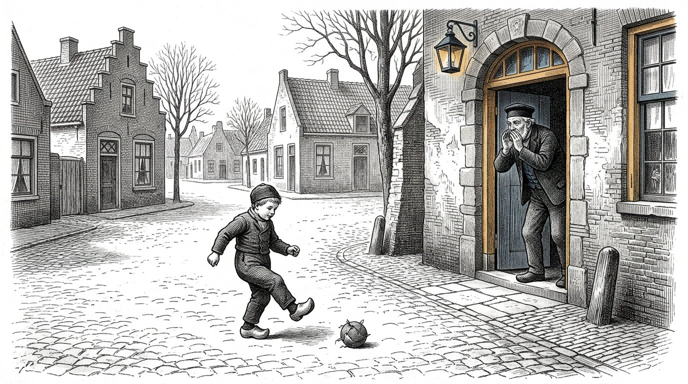
Había un perro en el puerto que se encontraba todos los días, a las cuatro menos diez de la tarde, frente a la escuela.
Decían que sabía leer el reloj, lo cual es absurdo, pero allí estaba, cada día, y nunca llegaba tarde.
Una vez me fijé en lo que hacía antes de marcharse.
Yacía junto a las redes. En cierto momento se levantó y se fue.
No había cambiado nada en el puerto. No había campana, no había ninguna persona que se marchara, no había nada que ver.
Lo sabía en el cuerpo.
Y, sin embargo, ese animal no puede planificar.
Si el miércoles hubieras querido hacerle entender que el jueves la escuela estaría cerrada, habría sido imposible. No difícil. Imposible.
El jueves fue, se encontró ante una puerta cerrada y el viernes volvió a ir.
Esa es la diferencia, y es una diferencia mayor de lo que parece.
Un ritmo corporal no es tiempo. Es un reflejo que regresa.
El tiempo es otra cosa. El tiempo es saber que mañana será distinto de hoy y hacer ya algo con ello.
Eso no puede hacerlo un mamífero, ni tampoco un niño de cuatro años.
Anthea escribe:Un ritmo corporal no es tiempo. Es un reflejo que regresa. El tiempo es saber que mañana será distinto.

Hay una palabra a la que nunca he conseguido acostumbrarme en la clínica, y es luego.
Una madre le dice a un niño de cuatro años: luego.
Lo dice con buena intención. Quiere decir: ahora no, pero llegará.
El niño no oye lo que ella quiere decir, porque para oírlo tendría que poder imaginar un mañana, y todavía no puede.
Lo que oye el niño es no.
Y como oye no mientras la madre quiere decir sí, algo no encaja, y el niño no puede decir qué.
Lo he visto ocurrir cien veces y cien veces no he dicho nada, porque qué podría decir una persona.
Lo que sí he visto es lo que sucede con las personas que lo hacen de otro modo.
No dicen luego. Dicen: primero esto, después aquello. Y primero hacen aquello junto al niño, y después lo otro.
Así el niño no tiene que salvar ningún abismo. Solo tiene que mirar.
Eso le cuesta más tiempo al padre o a la madre. Ese es todo el precio.
Inventamos esa palabra para no pagar ese precio.
Anthea escribe:Un niño de cuatro años no oye una promesa en la palabra luego. Oye no. Diga: primero esto, después aquello, y hágalo delante de él.
Parte V
Parte 5

En la que los cuatro pilares no se enseñan, sino que se viven; en la que se deposita la capa inferior, que después ya no vuelve a abrirse; y en la que se demuestra que un progenitor no puede hacerlo todo solo, porque un progenitor se aparta y otro niño de seis años no se aparta.

Yo lo he visto tres veces, y es la razón por la que empecé a escribir este libro.
Hay personas que llegan a la clínica y pueden con todo. Son inteligentes, laboriosas, no son crueles.
Y hay algo en lo más profundo de ellas que no encaja, y nada de lo que haces consigue alcanzarlo.
Puedes hablar con ellas y entienden todo lo que dices. Pueden repetirlo. Están de acuerdo contigo.
Y no cambia nada.
Me costó mucho aceptar que hay algo a lo que no se llega con palabras.
La capa superior de una persona cambia en una conversación. La capa intermedia cambia en un año o en diez.
La capa inferior es la que se deposita durante los primeros siete años, y después ya no cambia. Ni hablando, ni estudiando, ni queriéndolo.
No escribo esto para llamar desesperado a nadie. Una persona con una base torcida puede llevar una vida buena y feliz, y he conocido a muchas.
Lo escribo porque significa que los primeros siete años no son una fase más.
Son la única fase en la que se puede llegar a la capa inferior.
Anthea escribe:La capa superior cambia en una conversación. La capa inferior cambia en siete años, y después nunca más.
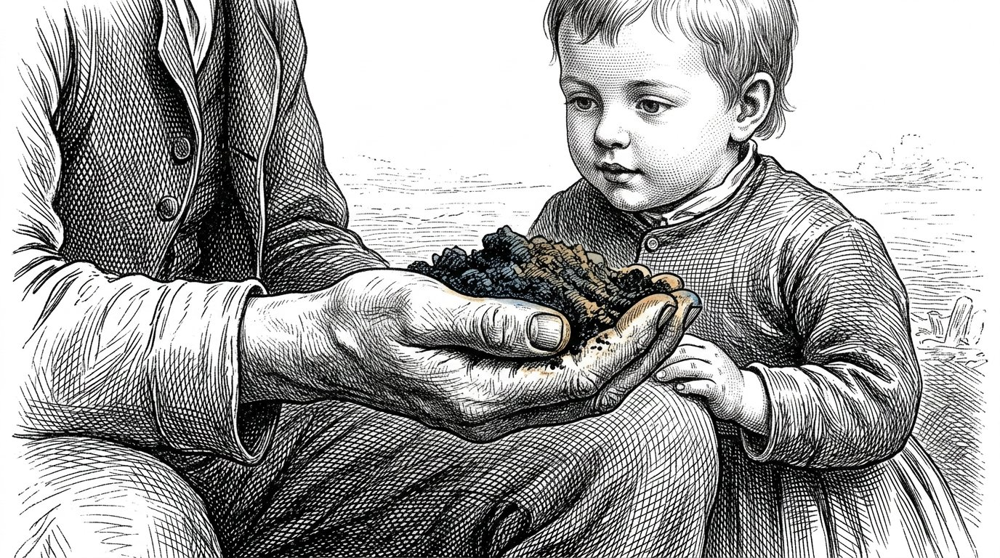
Yo una vez oí decir a un campesino que un campo se prepara una sola vez en la vida y después se trabaja doscientas veces.
Con un niño ocurre lo mismo.
Durante los primeros siete años preparas la tierra. Después la trabajas.
Lo que entra en esos siete años no es conocimiento. El conocimiento llega después y llega fácilmente.
Lo que entra son cuatro cosas, y las llamo como empecé a llamarlas en la clínica.
La primera es: viene alguien cuando llamo.
La segunda es: lo que se dice concuerda con lo que sucede.
La tercera es: puedo romper algo y sigo siendo bienvenido.
La cuarta es: alguien considera que merezco que me dedique tiempo, aunque no produzca nada.
Esos son los cuatro pilares, pero tal como los vive un niño de tres años. El niño no conoce las palabras y nunca llegará a conocerlos de esta manera.
Solo sabe si era verdad.
Anthea escribe:Los cuatro pilares no se enseñan. Durante los primeros siete años se viven o no.

Un niño de cuatro años rompió un vaso.
Hay tres maneras en que puede acabar la cosa, y he visto las tres cien veces.
La primera es que regañen al niño. Entonces aprende que equivocarse es peligroso y empieza a ocultar sus errores. Ese niño seguirá ocultándolos a los treinta años.
La segunda es que no ocurra nada, que la madre recoja el vaso y siga adelante. Entonces el niño aprende que un error no es nada. A los treinta años dejará cosas tiradas y no se dará cuenta.
La tercera es que la madre diga: el vaso se ha roto, vamos a recogerlo juntos, cuidado con los dedos.
Entonces ocurre algo que no ocurre en los otros dos casos.
El niño aprende que un error tiene una consecuencia, no un castigo; que la consecuencia se puede asumir, y que después todo vuelve a estar bien.
Ese es todo el secreto de este libro, y cabe en una sola tarea doméstica.
He oído a padres llamar a esto ser estrictos. No es ser estricto. Ser estricto es la primera forma.
Se trata de dejar que el niño afronte la consecuencia.
Anthea escribe:El castigo enseña a ocultar. No hacer nada enseña indiferencia. La consecuencia enseña a asumir.
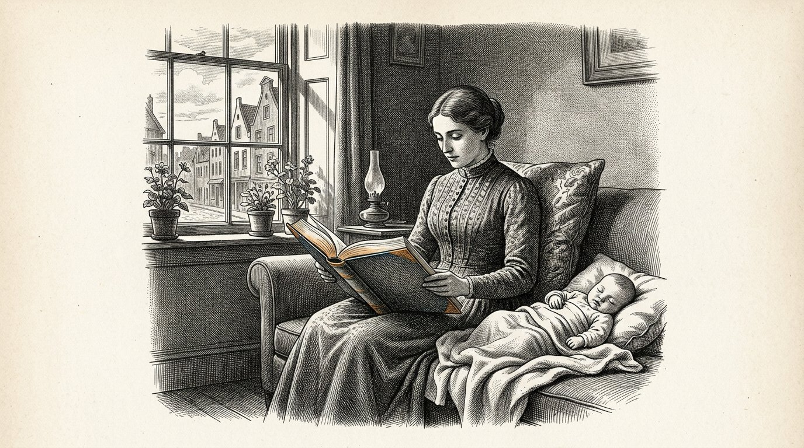
Una madre joven llegó a la clínica; lo había leído todo. Había leído tres libros y conocía los esquemas.
Su hijo lloraba y ella miraba el reloj.
El libro decía que un niño puede llorar veinte minutos después de comer, que después se dormirá solo, y eso es cierto, porque así ocurre.
Lo hacía bien, según el libro.
Durante tres meses no dije nada, porque no me correspondía.
Al cuarto mes me preguntó ella misma qué opinaba, y entonces se lo dije.
Le dije: "Mira el reloj. Mira al niño."
Ella dijo que el libro lo había escrito alguien que sabía de esas cosas.
Era verdad. También se lo dije.
Entonces le pregunté si el libro conocía a su hijo.
Empezó a llorar, y yo me quedé sentado y no dije nada, porque no había nada que decir. Durante cuatro meses había hecho lo que una persona sensata le había recomendado.
Hay dos clases de saber. Está el saber qué se aplica en general, y eso es saber de verdad y vale mucho.
Y está el saber quién tienes delante.
Lo primero se puede leer. Para lo segundo hay que mirar.
Anthea escribe:El libro dice la verdad. El libro no conoce a su hijo.

Detrás del puerto había una calle donde jugaban los niños y no había ningún adulto.
No fue una decisión. Simplemente era así.
Allí ocurrían cosas que en casa no ocurrían. Se empujaban. Se excluían. Se quitaban cosas y lloraban por ello.
Por lo general duraba media hora y después se acababa, y nadie había mediado.
Más tarde vi lo que hacía aquella calle.
En casa, un progenitor se adapta. No puede evitarlo, y está bien que lo haga. Amortigua. Se aparta un paso para que el niño pueda pasar.
Otro niño de seis años no hace eso. No se aparta.
Allí aprende un niño dónde termina él mismo.
No sé cómo se puede reproducir eso en casa, y no creo que sea posible.
La calle ya no existe. Ahora pasan coches, y los niños están dentro, y cuando se ven, lo han acordado dos madres que han coordinado sus horarios.
Entonces no se empujan.
Anthea escribe:Un progenitor se aparta. Otro niño de seis años no se aparta. Allí aprende el niño dónde termina él mismo.

Había un niño de siete años ingresado en nuestra clínica con un brazo roto, y no hablaba.
No por terquedad. Había aprendido que comprobaban lo que decía, y por eso prefería no decir nada.
Había un perro en el recinto. No era de nadie en particular.
El perro se tumbó a su lado, y el niño apoyó la mano sana sobre el lomo del animal; así permanecieron una hora.
Después lo oí hablar con el perro. No mucho ni de manera hermosa, pero hablaba.
Un animal no te pide que justifiques lo que dices.
Siente sin palabras, reacciona sin explicaciones, acepta o rechaza y no se avergüenza de nada.
Un niño que está con un animal descubre que dentro de sí hay algo que no está hecho de lenguaje, y que eso también existe en otros seres vivos.
Eso no se le puede explicar a un niño.
Tiene que haber un perro.
Anthea escribe:Un animal siente sin lenguaje y rechaza sin vergüenza. Así descubre un niño que su propio sentir no está hecho de palabras.

En la clase del sábado les daban a los niños un terreno. No uno para cada cual; uno para todos, detrás de la casa, junto al muelle, más o menos del tamaño de una habitación.
Durante nueve años lo trabajaron niños siempre distintos.
Probaron de todo en él. Hubo un año en que no salió nada. Hubo otro en que salió demasiado y se pudrió.
Lo que aprendieron allí los niños no aparece en ningún cuaderno.
Saben a qué huele cuando cambia el viento. Saben que empieza en la tercera semana de marzo, aunque el calendario diga otra cosa. Saben que una planta que brota demasiado pronto por lo general no prospera.
A los treinta años oí decir a una de ellas que, al tomar una decisión, siempre piensa en algo que brotó demasiado pronto.
Ya no sabía de dónde lo había sacado.
La naturaleza no miente, no halaga y no se adapta al niño. Hace lo que hace.
Para un niño no hay interlocutor más honrado, ni tampoco ninguno que exija tanta paciencia.
Anthea escribe:La naturaleza no halaga ni se adapta. Un niño que sigue durante años un mismo terreno aprende una medida que no figura en ningún cuaderno.
Parte VI
Parte 6

Donde el entendimiento se abre y todo entra, siempre que el sentimiento subyacente se haya solidificado y no se explique demasiado pronto.

Después de siete años aparece algo que antes no estaba, y no es una dirección en el espacio.
De pronto, el niño puede avanzar.
No caminar — eso ya podía hacerlo. Avanzar en el tiempo. Puede pensar en un día que aún no ha llegado y hacer ya algo para ese día.
Lo he visto con claridad una sola vez.
Había un niño de siete años que construyó un barco de madera, y por la mañana no lo echó al agua porque aquella tarde iba a levantarse viento.
El año anterior lo habría echado inmediatamente al agua y lo habría perdido.
Nadie le había hablado del viento.
Esta es la cuarta dirección, y es la primera que no tiene que ver con el cuerpo.
A partir de ese momento puede entrar todo lo que durante siete años hemos mantenido fuera. El reloj. La semana. El calendario. Hacer primero lo que más tarde dará fruto. Ahorrar. Esperar.
Ahora eso entra fácilmente, porque hay algo sobre lo que depositarlo.
Quien lo introduce antes de tiempo lo deposita sobre la nada.
Entonces obtiene un niño que sabe leer el reloj y que por dentro todavía no sabe que existe el mañana, y nadie ve la diferencia, porque el niño dice las cosas correctas.
Anthea escribe:El tiempo es la primera dirección que no tiene que ver con el cuerpo. Llega después de los siete, y entra fácilmente, siempre que entonces haya algo sobre lo que depositarlo.

Ocurre algo alrededor de los siete años, y sucede deprisa.
De pronto, el niño puede razonar. Puede pensar en términos de si-entonces. Puede aplicar una regla a un caso que nunca ha visto.
Esta es la edad a la que se empieza la escuela en casi todos los países, y no es casualidad; en todas partes lo han descubierto por separado.
Lo que ahora entra, entra fácilmente. Aritmética, lectura, idiomas, música. Todo.
Pero hay algo que rara vez se dice.
Entra en la capa que está por encima.
Si la capa de debajo está torcida, el niño se convierte en un buen alumno con una base torcida, y nadie lo nota, porque las notas son buenas.
Lo he visto muchas veces y nunca he podido hacer nada al respecto, porque un niño con buenas notas no recibe ayuda.
Sale a la superficie cuando el niño tiene dieciocho años, o veinticinco, o cuarenta.
Por lo general, a los cuarenta.
Anthea escribe:A partir de los siete, el niño lo aprende todo. Lo que aprende va a parar al suelo que ya existe.
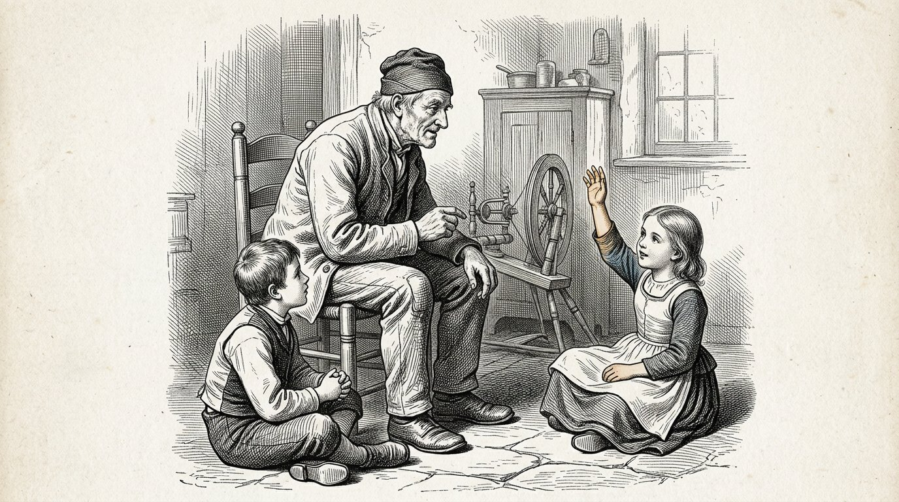
Había dos personas que contaban historias a los niños.
Una contaba la historia y después guardaba silencio.
La otra contaba la historia y después preguntaba: ¿y qué significa este relato para ti?
Ambas eran buenas personas y la segunda se esforzaba más.
Me senté con las dos y observé a los niños, no a quien contaba la historia.
Con la primera, los niños permanecían sentados un instante al terminar. Algunos miraban a ninguna parte. Después seguían con lo que estaban haciendo.
Con la segunda, las manos se alzaban de inmediato.
La diferencia está aquí. Un relato actúa sobre una capa que no utiliza palabras. Deposita un patrón sobre la manera en que terminan las cosas, y ese patrón se hunde y permanece allí.
Cuando preguntas de inmediato qué significa, lo sacas a la superficie antes de que se haya hundido.
Entonces los niños mantienen una conversación hermosa y el relato desaparece.
Una vez se lo dije a la segunda narradora y se enfadó, y lo entiendo, porque se esforzaba más que la primera.
Anthea escribe:Cuente el relato y guarde silencio. Lo que saca inmediatamente a la superficie nunca llegó a hundirse.

Un niño de cinco años pregunta cien veces al día por qué.
Se les dice a los padres que deben responder a esas preguntas, y por lo general es un buen consejo.
Pero conocí a un padre que lo hacía de otra manera, y vi crecer a aquel niño, así que lo dejo por escrito.
Respondía aproximadamente a la mitad. A la otra mitad le decía: "No lo sé. ¿Cómo podríamos averiguarlo?"
Es una respuesta molesta para un niño de cinco años, y al niño también le enfadaba con frecuencia.
Pero aquel niño empezó a preguntar de otra manera.
Al cabo de un tiempo empezó a decir por sí mismo: "Creo que es así, porque he visto que..."
Lo hacía a los seis años.
Los niños a los que se respondía a todo seguían preguntando por qué a los doce años, y seguían esperando que hubiera alguien que lo supiera.
Hay una diferencia entre un niño que sabe y un niño que sabe averiguar, y no es cierto que lo primero conduzca por sí solo a lo segundo.
Por lo general, no conduce a ello.
Anthea escribe:Responda a la mitad. Para la otra mitad, pregunte cómo podrían averiguarlo juntos.

Una nota dice hasta qué punto era buena la respuesta.
No dice nada sobre cómo se llegó a ella.
Dos niños sacan un ocho. Uno ha reflexionado y lo ha averiguado. El otro ha adivinado, y ha adivinado bien.
Obtienen la misma nota y ambos aprenden algo, y lo que aprende el segundo es lo más peligroso que existe.
En la clase del sábado probé algo distinto y no sé si estuvo bien.
Puse dos notas. Una por la respuesta y otra por cómo la habían encontrado.
La segunda nota podía ser más alta que la primera. Un niño que se había equivocado, pero había buscado bien, sacaba un cuatro y un nueve.
Los niños lo entendieron más deprisa que los padres.
Los padres miraban la primera nota.
Al cabo de medio año, los niños empezaron a preguntar por la segunda.
Anthea escribe:Dé dos notas. Una por la respuesta y otra por el camino seguido para llegar a ella.
Parte VII
Parte 7

Donde se describen la quinta, la sexta y la séptima dirección —tamaño, valor y cantidad— y donde resulta que la enseñanza no las inculca, sino que las elimina.

Había un chico en la escuela del muelle que un lunes perdió a su abuelo y esa misma semana faltó a un examen.
Por faltar al examen recibió una anotación.
Por perder a su abuelo recibió unas palabras amables del maestro junto a la puerta.
No digo que el maestro obrara mal. No había nada más que pudiera hacer.
Lo que escribo es lo que el chico aprendió de ello, y eso es algo distinto de lo que el maestro pretendía.
Aprendió que hay una sola medida con la que se juzgan las cosas, y que su abuelo no cabe en ella.
En una escuela, todas las cosas se reducen a la misma medida. Un examen perdido, una cuenta descuidada, un libro olvidado, una pelea en el patio y un abuelo muerto pasan por la misma ventanilla y salen convertidos, los cinco, en una anotación o en ninguna.
Así, un niño no aprende qué importancia tiene algo.
Y quien no aprende qué importancia tiene algo, a los cuarenta años no sabe cuáles de sus preocupaciones le pertenecen.
Se desvela por un correo electrónico y duerme durante un divorcio.
Anthea escribe:En la escuela, un libro olvidado y un abuelo muerto pasan por la misma ventanilla. Así, un niño nunca aprende qué importancia tiene algo.

Una vez pregunté a una clase de once años cuánto duran mil días.
Supieron calcularlo. Los dieciséis.
Dividieron entre trescientos sesenta y cinco y llegaron a casi tres años, y estaba bien.
Entonces les pregunté qué hacían tres años atrás.
Se hizo el silencio, y después llegaron respuestas de todo tipo: estaba en otra clase, mi hermanita aún no había nacido, todavía vivíamos junto al puerto.
Y en ese momento vi que a dos de ellos les ocurría algo.
Levantaron la mirada. Algo había pasado del número a su cuerpo.
Los otros catorce habían dado una respuesta correcta y no habían sentido nada.
El tamaño no consiste en calcular cuánto mide algo. Consiste en saber qué tamaño tiene.
Enseñamos muy bien lo primero a los niños. Del segundo nos ocupamos casi nada, y el segundo es el único de los dos que conduce a alguna parte.
Una persona capaz de calcular que una deuda dura diez años, pero que no sabe cuánto duran diez años, firma esa deuda.
Anthea escribe:Calcular qué tamaño tiene algo y saber qué tamaño tiene son dos cosas distintas. Solo practicamos la primera.

El nieto de Alkion sabía calcular a ojo el tamaño de un barco.
Miraba un navío que entraba en el puerto y decía cuánto llevaba cargado, y rara vez se equivocaba en más de una décima.
No había aprendido nada de eso. Había crecido con ello.
Le pregunté cómo lo hacía y no supo decirlo. Dijo que lo veía por lo hundido que estaba y por su posición respecto al muelle.
La cuestión es que tenía una vara de medir fuera de sí mismo, que permanecía siempre igual: el muelle.
Un niño que crece entre cosas que no cambian adquiere una vara semejante. El campanario. La anchura de la calle. El tiempo que se tarda en llegar al otro lado.
Un niño que crece entre pantallas no la adquiere, porque allí todo tiene el mismo tamaño. Un ratón, un elefante y una galaxia tienen todos la misma anchura que la imagen.
No sé qué ocupa su lugar.
Lo he buscado durante mucho tiempo y no he encontrado nada.
Anthea escribe:El tamaño se aprende de algo que no cambia. En una pantalla, todo tiene la misma anchura que la imagen.

El ojo es un músculo.
Quien mira el horizonte lo relaja. Quien enhebra una aguja lo tensa. Quien mira el agua y luego su mano y después otra vez el agua, cambia de enfoque cien veces por hora.
Ese cambio no cansa. Ese cambio es para lo que está hecho un ojo.
Una pantalla está siempre a la misma distancia.
Durante cuatro horas, el músculo permanece en una sola posición. No cambia ni descansa, porque quedarse quieto no es descansar para un músculo que debe cambiar.
Además, en una pantalla los dos ojos no tienen nada que hacer. No hay profundidad. Hay una superficie plana a medio metro, y las dos imágenes que reciben son casi idénticas.
Así comenzó precisamente la tercera dimensión: dos ojos que ven la misma cosa desde dos lugares.
En una pantalla ya no hace falta.
Y hay algo más. En una pantalla todo tiene el mismo tamaño, porque todo llena la imagen. Y en una pantalla todo es ahora, porque siempre llega algo más inmediatamente.
No he medido esto y no soy oftalmólogo.
Pero cuando cuento lo que una pantalla elimina, llego a tres cosas: la profundidad, el tamaño y el tiempo.
Esas son las tres de las que trata este libro.
Anthea escribe:Una pantalla elimina tres cosas a la vez: la profundidad, el tamaño y el tiempo. Todo a medio metro, todo del mismo tamaño, todo ahora.

En el boletín aparecen ocho asignaturas.
Lo que no aparece: si el niño ayudó a otro. Si terminó algo que nadie le había encargado. Si perseveró cuando las cosas se pusieron difíciles. Si fue sincero cuando habría sido más fácil no serlo.
Todo eso se valora, con palabras, por parte de personas buenas.
Pero no figura en el papel que llega a casa.
Un niño de ocho años no es tonto. En un año ve cuál de las dos cosas cuenta.
Una vez lo oí literalmente. Una niña de nueve años le dijo a su madre: "Es muy amable, pero no cuenta."
Lo dijo sin tristeza. Estaba constatando un hecho.
El valor es lo que vale algo, al margen de que alguien lo mida.
Un niño que aprende que el valor y la medición son lo mismo conserva esa idea toda la vida, y es la enfermedad más común de nuestro tiempo.
Esas personas no son codiciosas ni superficiales. Sencillamente, nunca han aprendido en ninguna parte cómo valorar algo que no aparece en ninguna lista.
Anthea escribe:El valor es lo que vale algo, al margen de que alguien lo mida. Un niño que equipara ambas cosas conserva esa idea toda la vida.

Hay una pregunta que los adultos hacen a los niños con buena intención: ¿eso es real o te lo estás imaginando?
En un niño de cinco años, esa pregunta causa daño.
No porque la distinción no exista. Existe y es la distinción más importante que hay; el libro segundo entero trata de ella.
Pero un niño de cinco años aún no tiene dos estantes donde colocar las cosas. Tiene uno, y todo está sobre él.
Cuando lo obligas a elegir, no elige. Aprende que hay algo mal en el estante.
Lo que sí funciona, y lo vi en una madre que no lo había aprendido de nadie, es poner la distinción en el relato en vez de ponerla en el niño.
Ella contaba una historia y al final decía: y esto es un cuento.
Nada más. Ninguna pregunta. Ninguna prueba.
El niño recibía el segundo estante sin que le quitaran nunca nada.
A los ocho años empezó a preguntarlo él mismo. Preguntaba: ¿esto es un cuento o sucedió de verdad?
Y ella le decía cuál de las dos cosas era, y nunca hizo nada más.
Anthea escribe:Pon la distinción entre lo real y lo inventado en el relato, no en el niño. Le ofreces el segundo estante; no le quitas el primero.

En el mercado oí a un hombre decirle a su hijo que algo era barato y, por tanto, bueno.
La semana siguiente oí a otro hombre decirle a su hijo que algo era caro y, por tanto, bueno.
Ambos se equivocaban, y ambos se equivocaban de la misma manera.
Los dos muchachos aprendieron que el precio dice algo sobre el valor.
Había un tercer hombre, que era pescador y compraba cuerda.
No escogió la más cara ni la más barata. Tomó un trozo entre las manos, tiró de él y observó cómo estaba trenzado, y le dijo a su hijo: mira, este está demasiado flojo, se estira.
No mencionó el precio.
Veinte años después, su hijo tuvo un astillero.
No digo que se debiera a eso. Digo que aquel muchacho, a los diez años, sostuvo algo entre las manos y aprendió a sentir si era bueno, sin que llevara asociado ningún número.
Ese es el eje del valor, y no se enseña porque no puede examinarse.
Anthea escribe:Quien enseña a su hijo que el precio dice algo sobre el valor le da una medida que lo engañará toda la vida.

Llegó al pueblo la noticia de que en algún lugar lejano habían muerto seis mil personas.
La gente la leyó, dijo que era espantoso y siguió con su día.
Esa misma semana, un chico del pueblo cayó de un embarcadero y se rompió una pierna, y de eso se habló durante tres semanas.
No lo condené y tampoco lo condeno ahora. Así está hecho el ser humano y yo mismo no soy distinto.
Pero sí reflexioné sobre lo que significa.
Tenemos sensibilidad para uno. No tenemos sensibilidad para mil.
Cuando se trata de uno, sabemos exactamente qué hacer. Vamos allí, llevamos sopa, nos sentamos a su lado.
Para seis mil no tenemos nada. No hay ninguna acción que corresponda.
Y como no hay ninguna acción que corresponda, tampoco sentimos nada.
Creo que esta es la más costosa de las tres dimensiones ausentes, porque todo lo que hoy sale mal, sale mal en cantidades que ningún ser humano puede sentir.
Necesitamos personas capaces de sentir seis mil.
No sé cómo se enseña eso. Sí sé que nosotros no lo intentamos.
Anthea escribe:Tenemos sensibilidad para uno y ninguna para mil. Todo lo que hoy sale mal, sale mal en cantidades que nadie puede sentir.
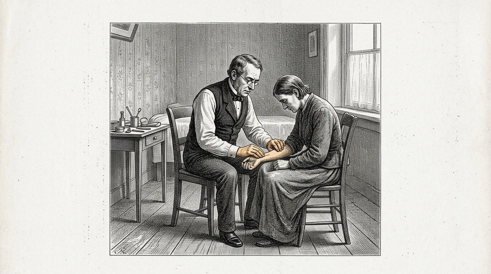
Había una mujer en el pueblo que decía que el médico nuevo no servía.
Su razón era que su vecina había acudido a él y no la había ayudado.
Un solo caso.
Ese año había habido doscientos cuarenta, y los otros doscientos treinta y nueve estaban satisfechos; ella no lo sabía y tampoco habría podido saberlo.
Pero tampoco preguntó.
Esta es la otra cara de la misma dimensión, y es tan grave como la primera.
Quien no tiene sensibilidad para las cantidades no puede sentir que un solo caso aún no significa nada, ni tampoco que mil casos significan algo.
Pesa todo según lo que ha visto personalmente.
No es estupidez. Es exactamente lo que hace una persona sin el sexto eje.
Y es la razón por la que en un pueblo pueden expulsar a un buen médico y conservar a uno malo sin que nadie desee hacer daño.
Anthea escribe:Sin sensibilidad para las cantidades, una persona pesa todo según lo que ha visto personalmente. Un caso se convierte en una verdad y mil casos no se convierten en nada.

Theia me preguntó una vez, cuando tenía dieciséis años, por qué en el pueblo la gente se cuida durante una fiesta de la cosecha, pero no cuando se toma una decisión sobre el interior del país.
Entonces dije algo que sigo pensando.
En la fiesta de la cosecha los ves.
Hay ochenta en la plaza y ves a los ochenta, y sabes a qué rostros corresponden.
Una decisión sobre el interior del país concierne a personas que no están allí. Viven demasiado lejos para acudir y son demasiadas para enumerarlas.
Así que no cuentan, y nadie ha decidido que no cuenten.
En mi vida conocí a una sola persona capaz de hacerlo. Fue Sofia, cuando era alcaldesa.
En cada reunión, todas las veces, decía la misma frase, y a la gente le resultaba molesta:
Aquí hay otras ochocientas personas que no están sentadas con nosotros.
Lo dijo más de mil veces.
Es lo único que he visto funcionar.
Anthea escribe:Quien no está presente no cuenta, y nadie ha decidido eso. Solo hay un remedio: decirlo en voz alta cada vez.
Parte VIII
Parte 8

Donde se practican tres cosas que nadie mide: el silencio, el cuerpo y el derecho a decir que no se sabe.

Había un niño de nueve años que estaba construyendo algo.
Llevaba con ello desde la mañana y estaba tan absorto que no levantó la vista cuando pasé a su lado.
A las once sonó la campana y el maestro dijo que era hora de matemáticas, y el niño recogió sus cosas.
Lo hizo sin protestar. Era un niño dócil.
Lo vi y no dije nada, porque no era mi clase ni era asunto mío.
Pero aquel invierno lo conté, por curiosidad.
Durante once mañanas anoté cuántas veces el horario arrancaba de aquello a un niño completamente absorto en algo.
Ocurría, de media, cuatro veces por mañana.
Un niño completamente inmerso en algo está aprendiendo en ese momento de la única manera en que se aprenden las cosas profundas. Los hechos también se pueden aprender junto a eso. Los patrones, no.
El horario existe para sostener el día.
Nosotros lo hemos convertido en algo que manda sobre el día, y así el horario se ha adueñado precisamente del instante que deberíamos proteger.
Anthea escribe:Cuando un niño está completamente inmerso en algo, mueve el horario. No al niño.

En la clase del sábado intentamos durante medio año algo que nadie entendía.
Empezábamos con silencio. Diez minutos. Sin tarea, sin cerrar los ojos, sin contar las respiraciones. Sentarse y nada más.
Las primeras cuatro semanas fue insoportable. Los niños se removían, se reían entre dientes y se miraban unos a otros. Dos padres preguntaron para qué enviaban allí a su hijo.
En la sexta semana ocurrió algo.
Cayó un silencio que no procedía de mí.
Lo que observé después fue que los niños trabajaban de otra manera tras esos diez minutos. No mejor en sus cuentas. De otra manera. Miraban algo durante más tiempo antes de empezar.
Una vez lo hice mal y lo escribo porque es el error que comete todo el mundo.
Había un niño que lo perturbaba todo y le dije que entonces se sentara en silencio a un lado.
Con eso convertí en una sola frase el silencio en un castigo.
Tardó tres meses en desaparecer.
Anthea escribe:El silencio no es una pausa ni un castigo. Es la única lección en la que un niño puede oírse a sí mismo.

Vino a verme una niña de once años que no quería ir a una determinada casa.
No sabía decir por qué. Solo decía que allí no se sentía a gusto.
Su madre dijo lo que diría cualquier madre sensata: apenas conoces a esa gente, no puedes juzgarla así como así.
Es verdad y está bien intencionado y es exactamente la frase con la que empieza.
Entonces le pregunté otra cosa. Le pregunté dónde lo sentía.
Se señaló el esternón.
Nos pusimos a hablar de ello y no salió nada. Nunca salió nada. A día de hoy no sé si en aquella casa ocurría algo.
Pero ese tampoco es el sentido de esta historia.
Lo importante es que, después de aquella conversación, la niña seguía sabiendo dónde lo sentía.
Si su madre hubiera tenido razón, y quizá la tuviera, la niña ya no lo habría sabido.
El cuerpo no es un vehículo para la cabeza. Está comunicando algo. Lo que comunica no siempre es cierto.
Pero un niño que aprende que el mensaje en sí no cuenta apaga el aparato.
Anthea escribe:Toma en serio el mensaje del cuerpo. Tomarlo en serio no equivale a darle la razón.
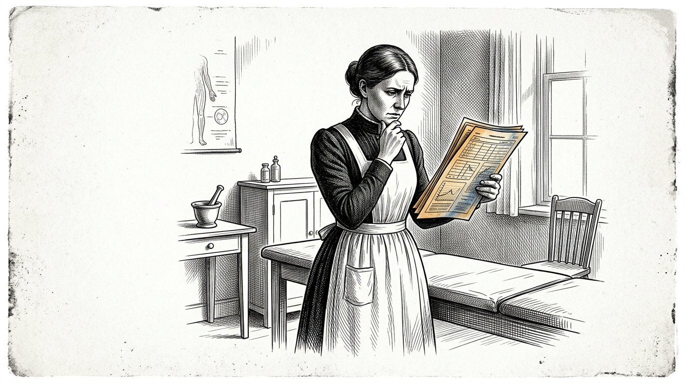
En la clase del sábado había un niño que dijo algo que no supe cómo abordar.
Tenían un problema sobre un barco que recorría cierta distancia en cierto número de horas, y él dijo que no podía ser.
Le pregunté por qué.
Dijo: "No sé por qué. No está bien."
La reacción sensata es decir que no se puede afirmar algo así, que hay que justificarlo y que no se puede calcular con una sensación.
Eso fue lo que le respondí.
Se quedó callado y al año siguiente no volvió a decir nada parecido.
Dos semanas después pasó por allí un pescador que había visto el problema en la pizarra y dijo que ningún barco recorría esa distancia en ese tiempo, porque tendría que hacerlo contra la corriente.
El problema procedía de un libro de un país sin mareas.
El niño no había calculado la corriente. Había vivido dieciséis años junto a un puerto.
Entonces comprendí lo que había hecho. No había rechazado su respuesta. Había rechazado la única fuente de que disponía, y esa fuente funcionaba.
Lo que debería haber dicho está desde entonces escrito en mi pared:
Te creo que no está bien. Averigüemos de dónde viene.
Anthea escribe:«No lo sé, pero no está bien» es una respuesta válida. Es el comienzo de toda investigación que conduce a alguna parte.

Había una niña en la clase del sábado que siempre acertaba. Cada problema, durante tres años.
Un día le puse un problema que no podía resolverse. Lo hice a propósito y debo decir de inmediato que, visto en retrospectiva, no me enorgullece.
Estuvo ocupada con él durante hora y media.
Entonces se echó a llorar.
No lloraba porque el problema fuera difícil. Lloraba porque pensaba que había algo malo en ella.
Le dije entonces que el problema no estaba bien y que yo lo sabía cuando se lo puse.
Se enfadó muchísimo y tenía razón.
Pero tres semanas después me preguntó si podíamos repetirlo, y si esta vez podía no decirle cuál era.
Lo hicimos durante un año. Cada sábado, seis problemas, de los cuales a veces uno no tenía solución.
Ha sido la única alumna que he tenido que no entra en pánico cuando algo no sale.
Y es la única que, a los trece años, se atrevió a decirle a un adulto: su pregunta no está bien planteada.
Anthea escribe:De vez en cuando dale al niño un ejercicio imposible. De lo contrario aprenderá que todos los ejercicios tienen solución.

En el segundo libro escribí sobre el maestro que empezó a explicar cómo sabía lo que sabía.
Aquí quiero escribir la parte que allí no aparece.
El primer año fue terrible para él.
Los niños dejaron de tomarlo en serio. Habían aprendido que un maestro sabe, y un maestro que dice que no sabe es, a sus ojos, un maestro que no conoce su oficio.
Dos padres fueron a quejarse.
Estuvo a punto de dejarlo y vino a verme para preguntarme si yo creía que aquello tenía sentido.
Entonces le dije que no lo sabía.
No le hizo ninguna gracia.
Lo que lo sostuvo fue algo pequeño. Un día había un niño en clase que dijo: "Maestro, no estoy seguro de eso."
Nunca antes había oído esa palabra de boca de un alumno. En dieciséis años, nunca.
Tardó aún dos años en convertirse en algo normal, y cuando se volvió normal ya no se notaba, porque los niños simplemente lo hacían.
Eso es lo difícil de este trabajo. Cuando funciona, no hay nada que ver.
Anthea escribe:Tarda dos años y, cuando funciona, no se ve nada. Ese es el precio.
Parte IX
Parte 9

En la que se abre la capacidad de observar el propio pensamiento, y en la que se revela que esa capa se abre a raíz de un conflicto.

Alrededor de los catorce años aparece algo que antes no estaba.
No es que el niño se vuelva más inteligente. Ya lo era.
Es que el niño puede observar su propio pensamiento mientras está pensando.
Un niño de diez años que está convencido de algo, está convencido. Un niño de quince que está convencido de algo puede pensar al mismo tiempo: por qué pienso esto, en realidad.
Esa es la tercera capa y es la capa de la que trata todo el segundo libro.
He visto cómo se abría en muchos niños y no ocurre gradualmente. Ocurre en unos pocos meses.
Los vuelve ingobernables. Empiezan a cuestionarlo todo, incluso lo que no hace falta cuestionar, y lo hacen de la manera más irritante que existe.
Eso es.
Eso es exactamente lo que tiene que suceder, y es la única vez que ocurre con facilidad, pero la mayoría de los adultos lo aplastan porque resulta incómodo.
He visto padres orgullosos de que su hijo de quince años no hubiera atravesado ninguna fase difícil.
Nunca pude decírselo.
Anthea escribe:La edad difícil no es algo que deban soportar. Es la tercera capa que se abre.

Me preguntan por qué digo catorce y no doce o dieciséis.
No lo he medido. Lo digo porque lo han encontrado en todas partes donde se enseña, e independientemente unos de otros.
Antes, entre nosotros, a los siete años se entraba de aprendiz, a los catorce se empezaba a trabajar por cuenta propia y a los veintiuno se era maestro.
No lo ideó alguien que estudiara el cerebro. Surgió en los talleres, a fuerza de intentarlo, a lo largo de cientos de años.
A los catorce, un aprendiz puede por primera vez realizar un trabajo solo y juzgar su propia labor.
A los veintiuno puede juzgar a otra persona.
Son dos cosas distintas y entre ellas hay siete años.
Los dieciocho no aparecen en este libro. Dieciocho es una cifra de la ley y no mide nada. Se eligió porque hacía falta un límite, no porque se hubiera observado algo.
Me quedo con siete, catorce y veintiuno, porque son las cifras a las que ha llegado la propia enseñanza.
Anthea escribe:Siete, catorce, veintiuno. Esas cifras proceden de la enseñanza, no de la ley.

Había un muchacho en quien no se abrió.
Tenía quince años, era amable y no era tonto. Hacía lo que le decían. Nunca había dado problemas.
Su madre estaba orgullosa.
Lo vi en la clínica por otro motivo y le hice una pregunta que sabía que nadie le había hecho jamás.
Le pregunté qué opinaba él.
No lo sabía. No por timidez. Nunca se lo había planteado.
Podía decirme con exactitud qué opinaba su padre, qué opinaba el maestro y qué opinaba la gente de la calle.
Me quedé pensando en ello aquella noche y entonces escribí algo que todavía no he conseguido superar.
La tercera capa no se abre por sí sola. Se abre cuando algo chirría.
Si un niño nunca ha vivido que dos cosas en las que cree no pueden ser verdad a la vez, no hay nada que pueda activar esa capa.
Un niño necesita conflictos.
Se los apartamos porque lo queremos.
Anthea escribe:La tercera capa se abre a raíz de un conflicto. Quien evita a su hijo todos los conflictos mantiene cerrada esa capa.

Había un maestro en la escuela del muelle que no sabía mucho.
Está escrito con dureza, y es verdad. Conocía su oficio de manera mediocre. Había otros dos que lo conocían mejor.
Y los niños de su clase salían distintos por aquella puerta.
Tardé años en comprender a qué se debía, porque no se debía a sus clases.
Lo que hacía era esto. Cuando entraba en un aula, primero miraba alrededor antes de decir nada.
Advertía cuándo ocurría algo. No porque lo hubiera oído: lo veía en la manera en que estaban sentados.
Y cuando lo advertía, hacía algo al respecto, aunque eso le costara la clase.
Los otros dos, que conocían mejor su oficio, comenzaban la clase en cuanto entraban.
Un niño no aprende la mayor parte de lo que dice una persona.
Aprende de lo que esa persona es, en la habitación, durante las horas que el niño permanece allí.
Por eso, al contratar a un maestro, la pregunta no es solamente cuánto sabe.
También es: ¿sabe esta persona leer una habitación?
Anthea escribe:Un niño no aprende ante todo de lo que sabe el maestro. Aprende de quién está en la habitación.
Parte X
Parte 10

En la que el entendimiento se hace cargo, pero solo en la medida en que debajo haya suficiente base emocional para sostenerlo — y en la que se describe qué ocurre cuando no la hay.

Hay dos líneas que atraviesan la vida de una persona.
La primera es la línea de las capacidades. Va desde el nacimiento hasta aproximadamente los catorce años, y entonces queda completa. Un muchacho de catorce años sabe andar, hablar, calcular, pensar, trabajar.
La segunda es la línea del juicio. Empieza donde termina la primera y llega hasta aproximadamente los veintiún años.
Juzgar no es saber algo. Juzgar es saber cuánto vale un caso antes de encontrarse dentro de él.
Eso no se puede aprender oyéndolo. Es lo único de todo este libro de lo que estoy seguro que no se puede transmitir con palabras.
Se aprende equivocándose durante siete años en cosas que importan un poco.
Un poco. No mucho.
Un muchacho que a los dieciséis alquila una barca, se aleja demasiado y regresa con dificultad ha aprendido algo que no se puede explicar.
Un muchacho al que a los dieciséis no se le permite nada aprende eso a los treinta, y entonces con una barca que es suya y una familia en casa.
Anthea escribe:La primera línea llega hasta los catorce años y trata de las capacidades. La segunda llega hasta los veintiuno y trata del juicio.
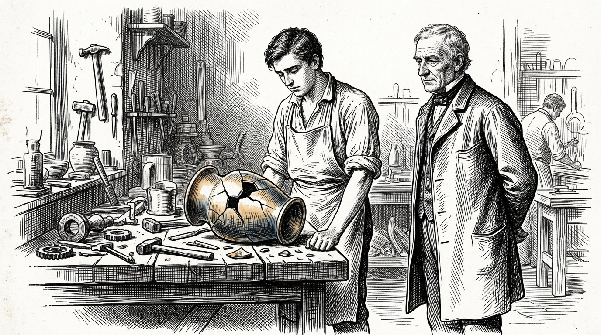
Un error tiene una medida, y esa medida es todo el oficio.
Un error debe costar lo suficiente para que duela y tan poco que pueda repararse.
Eso es todo.
Si no cuesta nada, el niño no aprende nada. Si cuesta demasiado, el niño aprende miedo, y el miedo no es juicio.
Lo difícil es que esa medida cambia con cada año y con cada niño.
Para un niño de seis años, un vaso roto tiene la medida adecuada. Para un muchacho de dieciséis, un vaso roto no es nada y una pierna rota es demasiado.
El educador solo tiene una tarea durante esos siete años, y es una tarea por la que nadie lo elogia jamás.
Debe mantener los errores a la medida.
No eliminarlos. Mantenerlos a la medida.
Eso significa que hay que observar cómo sale mal algo que uno sabe de antemano que saldrá mal, mantener las manos quietas y estar preparado para lo que venga después.
Tuve que hacerlo cuatro veces con mi propia familia y tres veces no fui capaz de soportarlo.
Anthea escribe:Un error debe costar lo suficiente para que duela y tan poco que pueda repararse.
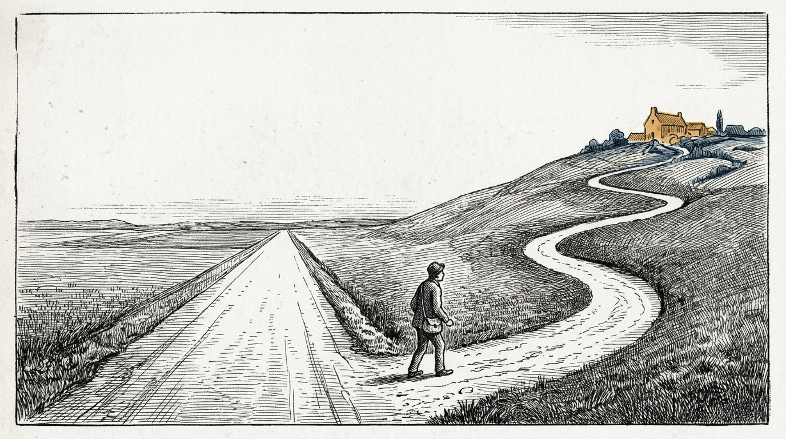
Un muchacho de dieciocho años quería abrir un taller, y el plan no se sostenía.
Yo lo vi. Su padre lo vio. El herrero lo vio.
Los tres se lo dijimos y se lo explicamos bien, con las cifras incluidas.
Aun así, decidió hacerlo.
Salió mal como habíamos dicho, solo que no en el lugar que habíamos señalado. Salió mal por algo en lo que ninguno de los tres había pensado.
Y en el lugar donde estábamos seguros de que saldría mal, no salió mal, porque por el camino había encontrado una solución que nosotros no conocíamos.
Perdió dos años y no quebró.
A los veinticuatro volvió a empezar y ese taller todavía sigue allí.
Una vez le pregunté si volvería a hacerlo.
Dijo que no volvería a hacerlo, que tampoco habría querido perdérselo y que no sabía cómo podían coexistir esas dos frases.
Yo tampoco lo sé.
Pero sé que las tres personas que lo sabían mejor acertaron en un punto y se equivocaron en otro, y que de antemano no podíamos decir cuál era cuál.
Anthea escribe:Quien cree saberlo mejor de antemano suele tener razón a medias. El camino revela qué mitad.
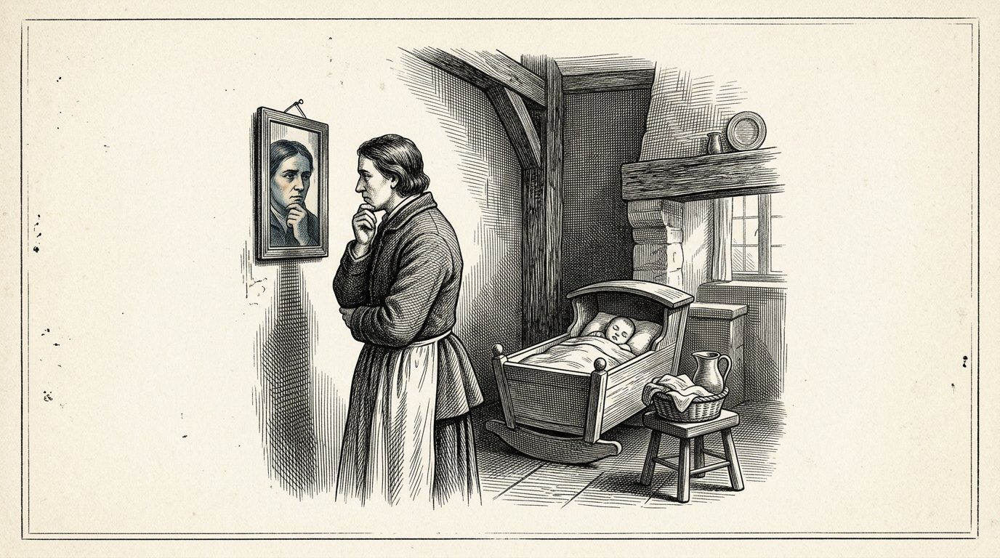
Vino a verme un padre con una pregunta que no pude responder.
Lo había leído todo. Hacía todo lo que dice este libro y lo hacía escrupulosamente.
Y dijo: "No funciona. Mi hijo no me cuenta nada."
Me senté con ellos dos veces, en su casa, porque de otro modo no habría podido verlo.
Lo hacía bien. Formulaba las preguntas adecuadas, dejaba silencios, no interrumpía.
Y no estaba allí.
No sé cómo decirlo de otro modo. Estaba sentado en la silla y ejecutaba los gestos, pero detrás de sus ojos no había nadie en casa.
Su hijo de diez años lo vio en un instante, como lo ve cualquier niño.
Se lo dije, y fue la conversación más desagradable de aquel año.
Preguntó qué debía hacer entonces, y le dije que no lo sabía, y que en cualquier caso no era algo que debiera hacerle a su hijo.
Es la frase más dura de todo este libro, y aun así la incluyo.
Usted no puede dar a su hijo lo que ya no tiene.
El trabajo no empieza con el niño.
Anthea escribe:Usted no puede dar a un niño lo que ya no tiene. El trabajo no empieza con el niño.
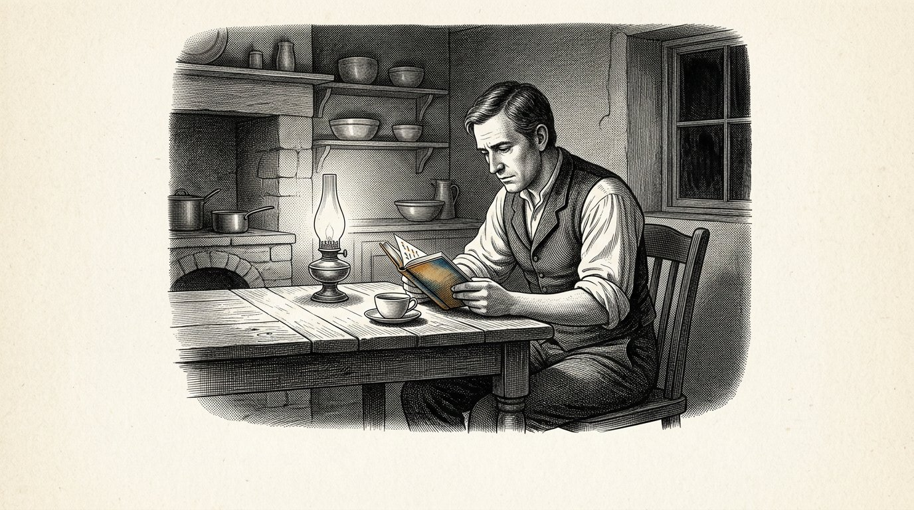
Vino a la clínica un hombre de cuarenta años, y no le pasaba nada.
Había acudido por algo menor y estábamos esperando un resultado, así que hablamos durante una hora.
Había estudiado. Tenía un buen empleo. Tenía una familia.
Y me hacía las mismas preguntas que me hacen los muchachos de diecisiete años.
Preguntó qué debía hacer. No en lo pequeño, sino en lo grande. Lo preguntaba como si hubiera alguien que lo supiera.
Era veintitrés años mayor que aquellos muchachos y estaba en el mismo lugar.
Después pregunté por él a personas que lo conocían, cosa que no debía hacer, pero la hice.
Había tenido una buena vida en casa. Muy buena. Nunca había salido nada mal.
Había ido a una buena escuela, había sacado buenas notas y después había recibido una buena formación.
Todo lo que había hecho en su vida había salido bien.
Me fijé en ello aquel año y desde entonces he seguido fijándome, y me he encontrado con diez que no se diferenciaban en nada salvo en su profesión.
Todos se habían equivocado demasiado poco.
Anthea escribe:Quien hasta los treinta años no se ha equivocado nunca, a los cuarenta se encuentra donde está un muchacho de diecisiete.

Escribo esto a los setenta y dos años y he visto cambiar los tiempos.
Cuando era joven, un muchacho se embarcaba a los catorce años y salía adelante, y el mar no juzgaba con indulgencia, pero juzgaba de inmediato.
Ahora un muchacho estudia hasta los veintitrés y nadie lo juzga salvo con una nota.
Una nota llega después, no duele y puede remediarse estudiando más.
Eso no es un error a la medida. Eso no es un error en absoluto.
No estoy en contra de aprender. Yo mismo aprendí, y eso me ha dado todo lo que tengo.
Pero veo que de los siete a los veintitrés hemos prolongado la primera línea, la línea de las capacidades, y que durante esos mismos años hemos eliminado la segunda línea.
Hemos hecho del aprendizaje algo tan absorbente que no quedó espacio para equivocarse de verdad.
La segunda línea empieza entonces solo después de los estudios. A los veinticinco años.
Y como empieza entonces con una familia, una deuda y un trabajo, ya no existe ningún error que tenga la medida adecuada.
Todo error es demasiado grande.
Así que ya no se cometen, la línea no llega y uno cumple cincuenta sin haber tenido jamás un juicio propio.
Anthea escribe:Hemos llenado de aprendizaje los años en que una persona debería equivocarse.

Había una mujer que a los cincuenta años lo perdió todo. Su marido se marchó, la casa tuvo que irse y ella quedó sola ante todo.
Hasta entonces había sido una mujer de la que se decía que no podía decidir nada por sí misma.
Y así era. Le preguntaba todo a otra persona.
El primer año hizo casi todo mal. Vendió lo que debía haber conservado y conservó lo que debía haber vendido.
El segundo año hizo mal la mitad.
Al quinto año, otros acudían a preguntarle qué opinaba.
Una vez la oí decir esto, y es la frase más dura que he oído en mi vida:
"Empecé a los cincuenta con lo que debería haber hecho a los quince. Todavía se puede. Solo cuesta treinta años más y se trata de cosas que ya no pueden repararse."
Escribo esto como la única parte consoladora de este capítulo.
Todavía se puede.
Solo es caro.
Anthea escribe:Todavía se puede a los cincuenta. Entonces cuesta todo lo que a los quince no habría costado.

No he tenido hijos.
Hay una razón y esa razón no le importa a nadie, pero eso significa que escribo este libro desde fuera del asunto y no desde dentro.
He visto nacer a ciento diecinueve niños y no he criado a ninguno.
Sin embargo, hubo tres que pasaron mucho tiempo conmigo y que ahora son adultos, y de ellos sé esto:
con el primero hice todo lo que dice este libro y salió bien.
Con el segundo hice todo lo que dice este libro y no salió bien.
Con el tercero hice mal la mayor parte, porque yo mismo estaba confundido entonces, y ese niño es el que mejor está de los tres.
No he sabido explicarlo y lo he intentado.
Lo escribo aquí porque no quiero omitirlo, y porque en el segundo libro yo mismo escribí que deben mencionarse los casos que no encajan.
El libro sería mejor sin este capítulo.
Entonces no sería verdadero.
Anthea escribe:He acompañado a tres niños. Este libro acertó con dos. Con uno, no. No sé por qué.
Parte XI
Parte 11

En la que Anthea no acusa a los padres, porque no ha existido una generación que lo supiera y porque han desaparecido los lugares donde antes se corregía fuera de casa.

Una madre vino a verme, avergonzada.
Le había dado una pantalla a su hijo porque ya no podía más, y lo decía como si hubiera robado algo.
Entonces dije algo que sigo sosteniendo.
Dije: su madre tampoco le enseñó a calcular qué tan lejos está algo.
Me miró.
Entonces le expliqué lo que quería decir, y tardé mucho, y todo se reducía a esto.
Hablamos de estas cosas como si hubiera una generación que lo supiera y lo hubiera perdido. No existe tal generación.
Su madre había trabajado. Su abuela había trabajado, había tenido siete hijos y no había tenido tiempo para ninguno. En el pueblo de donde procedía, los niños entraban en la fábrica a los once años.
No hemos perdido esto. Lo hemos tenido a ratos y, la mayoría de las veces, no.
Lo que ahora es distinto no es que seamos peores.
Es que antes se corregía fuera de casa. Lo hacía la calle, y el campo, y el taller donde un muchacho de catorce años estaba junto a un hombre.
Ya no existen, y nada ha ocupado su lugar, así que todo recae sobre el padre o la madre.
Una sola persona no puede con eso.
Anthea escribe:No existe una generación que lo supiera. Antes se corregía fuera de casa. Esos lugares han desaparecido y ahora todo recae sobre una sola persona.

Yo he escrito en este libro que durante los primeros años una persona debe estar presente de forma constante.
Es cierto y no me retracto de nada.
También sé que para la mayoría de la gente no es posible.
En este pueblo, durante mi juventud trabajaban los hombres y, cuando llegué a la vejez, trabajaban los dos, y no fue una elección que nadie hubiera hecho. La casa costaba más, la vida costaba más y con un solo sueldo ya no alcanzaba.
Así que el niño queda al cuidado de cinco personas, y he escrito en este libro lo que eso provoca, y eso se mantiene.
Pero me niego a llamarlo un error de esos padres.
No eligieron entre su hijo y un segundo ingreso. No había elección.
Lo que pienso al respecto es esto, y es lo único político que hay en este libro.
Cuando una sociedad encarece tanto sus viviendas que ambos padres tienen que trabajar, ha decidido cómo se criará a sus hijos.
Esa decisión nunca se tomó en una reunión. Nunca se votó.
Llegó como llegó la carretera negra.
Estaba allí y se pegaba.
Anthea escribe:Cuando una sociedad encarece tanto sus viviendas que ambos tienen que trabajar, ha decidido cómo se criará a sus hijos. Esa decisión nunca se tomó.

Quien planta un árbol, lo ve crecer.
Quien cría a un hijo, no ve nada.
Ese es el verdadero problema de todo este libro, y todos los consejos que doy tienen poco valor frente a eso.
Durante los primeros siete años usted construye unos cimientos que solo se hacen visibles cuando el niño tiene cuarenta, y para entonces usted está muerto o es viejo, y además ya no se le pueden atribuir, porque han ocurrido muchas otras cosas.
No hay ninguna prueba de que usted haya hecho jamás algo bueno.
Esa es la razón por la que la gente cría pensando en el corto plazo. Hace lo que proporciona calma esta noche.
Yo también lo hice y no tuve hijos, así que lo tuve fácil.
Escribo esto para las personas que a las diez de la noche ya no saben qué hacer y creen que lo están haciendo mal.
Usted no lo ve. Tampoco llegará a verlo.
Eso no significa que no funcione.
Es la naturaleza del trabajo.
Anthea escribe:No recibirá ninguna prueba. No es porque no funcione. Es porque tarda setenta y siete años.
Parte XII
Parte 12

Donde se cierra la serie, se vuelven a leer las catorce páginas y la llave queda colgada en el cobertizo.

Hay un número en este libro que no puedo demostrar y que, sin embargo, anoto.
Siete días. Siete meses. Siete años. Catorce. Veintiuno.
Y después un largo silencio, y después setenta y siete.
Setenta y siete no es la edad a la que una persona aprende algo. Es el tiempo que transcurre antes de que lo que una persona ha aprendido regrese en alguien que no la conoció.
He podido comprobarlo a partir de una sola cosa, y esa cosa es pesar los sacos.
Mi abuela empezó a hacerlo cuando tenía treinta y un años.
Yo lo asumí sin saberlo cuando tenía diecisiete.
Una muchacha de la clínica lo asumió de mí cuando tenía veinte años y yo cincuenta y seis, y nunca me oyó decir por qué.
Ahora tiene cuarenta y cuatro y hay un muchacho que lo ha aprendido de ella.
Desde mi abuela hasta ese muchacho han transcurrido setenta y seis años.
Ninguno de ellos oyó jamás a nadie explicar por qué se pesa.
Los cuatro lo hicieron junto a alguien que lo hacía.
Anthea escribe:Lo que usted hace junto a un niño regresa setenta y cuatro años después en alguien que no lo conoció.

He vuelto a leer las catorce páginas que aparecen al principio de este libro.
Las escribí cuando tenía veinte años y entonces me parecieron buenas.
Ahora me parecen demasiado categóricas.
Dice allí que veía colores y que desaparecieron cuando tenía catorce años. Eso es cierto.
Dice allí que sé qué eran. Eso no es cierto. No lo sabía y todavía no lo sé.
No lo he quitado.
He puesto debajo una frase, que dice así: lo escribí cuando creía que lo entendía.
No he hecho nada más y tampoco haré nada más.
Porque si lo corrijo, allí quedará lo que pienso ahora, y dentro de veinte años eso tampoco será cierto, y entonces ya no habrá nadie que pueda poner algo debajo.
Así queda lo que pensaba a los veinte años, con lo que opinaba de ello a los setenta y dos debajo, y la diferencia entre ambas cosas es la única enseñanza que tengo que ofrecer en este libro.
Anthea escribe:No corrija lo que pensaba antes. Escriba debajo lo que opina ahora y deje la diferencia tal como está.
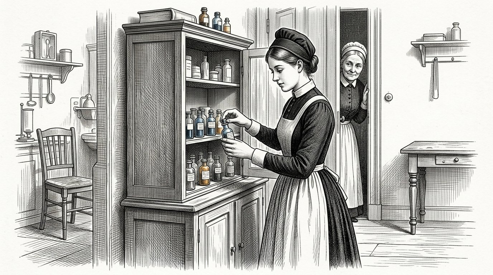
Una muchacha llegó a la clínica cuando yo tenía sesenta y ocho años.
Tenía veinte años, no era especialmente hábil y tampoco era la más inteligente de las que he tenido.
Tenía una cosa.
Cuando no estaba segura de algo, lo decía.
No lo decía por precaución ni para cubrirse las espaldas. Lo decía como se dice que llueve.
No tuve que hacer nada con ella.
La tuve tres años a mi lado y no le enseñé nada que no tuviera ya, y cuando me fui le di el armario y ella empezó a contar los frasquitos.
Nunca le expliqué por qué.
Sin embargo, lo pensé. Consideré explicárselo, decirle: esto viene de una panadería, de una mujer que nunca conociste.
No lo hice.
Lo habría recordado y lo habría contado, y entonces se habría convertido en una historia que la gente repite, y al cabo de treinta años habría sido una frase en una estantería.
Ella cuenta.
Es suficiente.
Anthea escribe:No diga de dónde viene. Hágalo delante de ella.

Detrás del pueblo está el jardín de Jan.
He estado allí cuatro veces en mi vida y nunca he hecho nada, porque no entiendo de plantas.
La última vez que estuve allí tenía setenta y un años, era octubre y no había nadie.
Crecían catorce especies y se podían comer once.
El jardín no está dispuesto en hileras.
No hay ningún letrero ni ninguna cerca, y en ninguna parte hay nada explicado.
Quien llega sin saber nada ve un jardín desordenado.
Quien llega sabiendo ve que las plantas altas están en el lado sur, que debajo de cada planta alta crece algo bajo que necesita sombra y que no hay dos iguales una junto a otra.
No fue algo concebido de antemano. Se fue formando durante cuarenta y cinco años, porque siempre hubo alguien que observó qué había funcionado el año anterior.
Ninguno de ellos lo puso por escrito.
Me quedé allí mucho tiempo y pensé que debería escribirlo, porque soy alguien que escribe las cosas y esa ha sido la utilidad de toda mi vida.
No lo hice.
Si queda escrito, llegará alguien que lo lea y disponga el jardín tal como aparece escrito.
Y entonces habrá un jardín correcto al que nadie volverá a mirar.
Dejé la llave colgada en el cobertizo.
Anthea escribe:No lo he puesto por escrito. Dejé la llave colgada.
Tengo setenta y dos años y esto es lo último que escribo.
En este libro he dicho lo mismo sesenta y cinco veces. Un niño no adopta lo que usted dice. Adopta lo que usted hace mientras dice otra cosa, o mientras no dice nada.
De ahí se desprende algo desagradable. Este libro no puede llevarse a la práctica. No contiene nada que usted pueda hacer mañana porque aquí esté escrito, porque en cuanto lo haga por estar escrito aquí, no lo estará haciendo de verdad, y el niño lo verá.
He estado mucho tiempo dándole vueltas y no he llegado a ninguna conclusión.
Lo que queda es esto: usted no puede educar. Solo puede ser alguien por sí mismo, en presencia de un niño, durante el tiempo suficiente.
Todo lo que contiene este libro es un rodeo hacia esa única frase, y el rodeo es necesario, porque esa única frase, por sí sola, usted no se la habría creído.
Dejé la llave colgada en el cobertizo.
Quien sostiene las cuatro columnas es sostenido por las cuatro columnas.